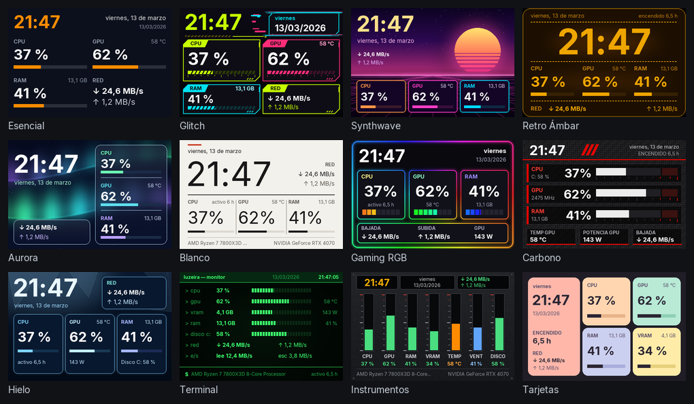
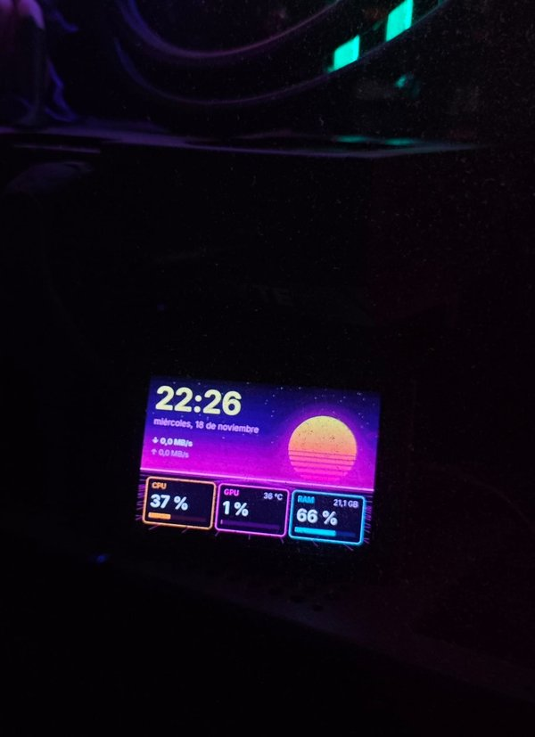
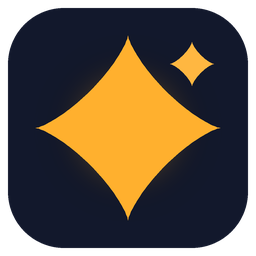

LuzeiraTu PC en la pantallita USB.
App libre para las pantallas USB de 3,5" que se ponen dentro o encima del PC. Muestra la CPU, la gráfica, la memoria, la red y la hora, con 32 temas y un editor visual para hacer los tuyos.
- Windows 10 y 11
- Gratis y libre
- Sin anuncios ni telemetría
¿Te resulta útil? Invítame a un café en Ko-fi, es voluntario.